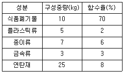
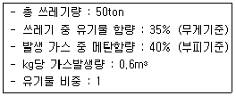
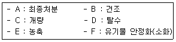
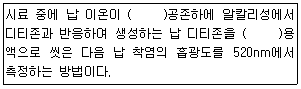
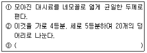
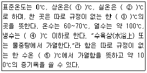
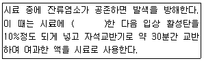
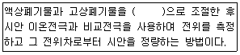
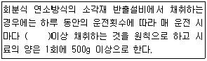

폐기물처리산업기사 (2012-05-20 기출문제)
1과목: 폐기물개론
1. A도시에서 수거한 폐기물량이 3,520,000톤/년이며, 수거인부는 1일 5848인, 수거대상 인구는 6,363,288인 경우, A도시의 1인 1일 폐기물 발생량은?
- 1.51 kg/인ㆍ일
- 1.87 kg/인ㆍ일
- 2.14 kg/인ㆍ일
- 2.65 kg/인ㆍ일
(정답률: 80%)

2. 함수율 80wt%인 슬러지를 함수율 10wt%로 건조하였다면 슬러지 5톤당 증발된 수분량은? (단, 슬러지 비중은 1.0)
- 약 2600kg
- 약 2800kg
- 약 3400kg
- 약 3900kg
(정답률: 72%)
3. 인구 2000명인 도시에서 일주일간 쓰레기 수거상황을 조사한 결과, 차량대수 3대, 수거횟수 4회/대, 트럭 적재함 부피 10m3, 적재 시 밀도 0.6t/m3이었다. 1인당 1일 쓰레기 발생량은?
- 3.43 kg/인ㆍ일
- 4.45 kg/인ㆍ일
- 5.14 kg/인ㆍ일
- 6.38 kg/인ㆍ일
(정답률: 82%)
4. 어느 도시의 쓰레기를 수집한 후 각 성분별로 함수량을 측정한 결과가 다음 표와 같았다. 쓰레기 전체의 함수율(%)값은? (단, 중량 기준)

- 18.1%
- 19.2%
- 20.3%
- 21.4%
(정답률: 79%)
5. 다음 중 폐기물관리에서 가장 우선적으로 고려해야 하는 것은?
- 감량화
- 최종처분
- 소각열 회수
- 유기물 퇴비화
(정답률: 87%)
6. 밀도가 500kg/m3인 폐기물 5ton을 압축비(CR) 2.5로 압축시켰다면 부피 감소율(VR, %)은?
- 50
- 60
- 70
- 80
(정답률: 72%)
7. 쓰레기 발생량 조사방법 중 주로 산업폐기물 발생량을 추산할 때 이용하는 방법으로 조사하고자 하는 계의 경계가 정확하여야 하는 것은?
- 물질수지법
- 직접계근법
- 적재차량계수분석법
- 경향법
(정답률: 77%)
8. 다음은 다양한 쓰레기 수집 시스템에 관한 설명이다. 각 시스템에 대한 설명으로 옳지 않은 것은?
- 모노레일 수송은 쓰레기를 적환장에서 최종처분장까지 수송하는 데 적용할 수 있다.
- 컨베이어 수송은 지상에 설치한 컨베이어에 의해 수송하는 방법으로 신속 정확한 수송이 가능하나 악취와 경관에 문제가 있다.
- 컨테이너 철도수송은 광대한 지역에서 적용할 수있는 방법이며 컨테이너의 세정에 많은 물이 요구되어 폐수처리의 문제가 발생한다.
- 관거를 이용한 수거는 자동화, 무공해화가 가능하나 조대쓰레기는 파쇄, 압축 등의 전처리가 필요하다.
(정답률: 87%)
9. 폐기물 매립 시 파쇄를 통해 얻을 수 있는 이점과 가장 거리가 먼 것은?
- 매립작업만으로 고밀도 매립이 가능하다.
- 표면적 감소로 미생물 작용이 촉진되어 매립지 조기 안정화가 가능하다.
- 곱게 파쇄하면 복토 요구량이 절감된다.
- 폐기물의 밀도가 증가되어 바람에 멀리 날아갈 염려가 적다.
(정답률: 70%)
10. 750세대, 세대 당 평균 가족 수 4인 아파트에서 배출하는 쓰레기를 2일마다 수거하는데 적재용량 8m3의 트럭 5대가 소요된다. 쓰레기 단위 용적당 중량이 0.14g/cm3이라면 1인 1일당 쓰레기 배출량은?
- 0.93 kg/인ㆍ일
- 1.38 kg/인ㆍ일
- 1.67 kg/인ㆍ일
- 2.17 kg/인ㆍ일
(정답률: 74%)
11. 다음 조건에 따른 지역의 쓰레기 수거는 1주일에 최소 몇 회 이상 하여야 하는가? (단, 발생된 쓰레기 밀도 160kg/m3, 차량적재용량 15m3, 압축비 2.0, 발생량 1.2kg/인ㆍ일, 적재함 이용률 80%, 차량대수 1대, 수거대상인구 40000인, 수거인부 8명)
- 69
- 76
- 88
- 94
(정답률: 82%)
12. 쓰레기 관리 체계에서 비용이 가장 많이 드는 것은?
- 수거
- 처리
- 저장
- 분석
(정답률: 93%)
13. 다음 중 적환장이 설치되는 경우로 옳지 않은 것은?
- 고밀도 거주지역이 존재할 때
- 작은 용량의 수집차량이 사용되는 경우
- 상업지역에서 폐기물 수집에 소형용기를 많이 사용하는 경우
- 불법투기와 다량의 어질러진 쓰레기들이 발생하는 경우
(정답률: 90%)
14. 폐기물 발생량 예측방법 중 모든 인자를 시간에 함수로 나타낸 후 시간에 대한 함수로 표현된 각 영향인자 간의 상관계수를 수식화하는 것은?
- 상관모사모델
- 시간추정모델
- 동적모사모델
- 다중회귀모델
(정답률: 95%)
15. 함수율 60%인 쓰레기와 함수율 90%인 하수슬러지를 5:1의 비율로 혼합하면 함수율은? (단, 비중은 1.0 기준)
- 60%
- 65%
- 70%
- 75%
(정답률: 78%)
16. 폐기물 수거를 위한 노선을 결정할 때 고려하여야 할 내용으로 옳지 않은 것은?
- 언덕지역에서는 언덕의 꼭대기에서부터 시작하여 적재하면서 차량이 아래로 진행하도록 한다.
- 아주 많은 양의 쓰레기가 발생되는 발생원은 하루 중 가장 나중에 수거한다.
- 적은 양의 쓰레기가 발생하나 동일한 수거빈도를 받기를 원하는 적재지점은 가능한 한 같은 날 왕복 내에서 수거하도록 한다.
- 가능한 한 시계방향으로 수거노선을 결정한다.
(정답률: 94%)
17. 폐기물의 압축 전 밀도는 500kg/m3이고, 압축시킨 후 밀도는 800kg/m3이었다. 이 폐기물의 부피감소율은?
- 31.5%
- 33.5%
- 35.5%
- 37.5%
(정답률: 65%)
18. 선별방법 중 주로 물렁거리는 가벼운 물질로부터 딱딱한 물질을 선별하는데 사용되는 것은?
- Flotation
- Heavy Media Separator
- Stoners
- Secators
(정답률: 77%)
19. 채취한 쓰레기 시료에 대한 성상분석 절차로 가장 옳은 것은?
- 밀도 측정→물리적 조성→건조→분류
- 밀도 측정→물리적 조성→분류→건조
- 물리적 조성→밀도 측정→건조→분류
- 물리적 조성→밀도 측정→분류→건조
(정답률: 80%)
20. 다음 중 파쇄기에 관한 내용으로 옳지 않는 것은?
- 전단파쇄기는 파쇄물의 크기를 고르게 할 수 있다.
- 충격파쇄기는 금속 및 고무 파쇄에 유리하다.
- 압축파쇄기는 나무, 콘크리트 덩어리, 건축 폐기물 파쇄에 이용된다.
- 습식 펄퍼(Wet Pulpur)는 소음, 분진, 폭발사고를 방지할 수 있다.
(정답률: 62%)
2과목: 폐기물처리기술
21. 다음과 같은 조건에서 매립지에서 발생한 가스 중 메탄의 양은 몇 m3인가?

- 4200
- 5200
- 6200
- 7200
(정답률: 84%)
22. 폐기물 열분해의 장점으로 옳지 않은 것은? (단, 소각처리와 비교 기준)
- 황 및 중금속이 회분 속에 고정되는 비율이 크다.
- 저장 및 수송이 가능한 연료를 회수할 수 있다.
- 환원성 분위기가 유지되어 Cr3+가 Cr6+로 변화된다.
- 배기 가스량이 적다.
(정답률: 50%)
23. 혐기성 소화와 호기성 소화를 비교한 내용으로 옳지 않는 것은?
- 호기성 소화 시 상층액의 BOD 농도가 낮다.
- 호기성 소화 시 슬러지 발생량이 많다.
- 혐기성 소화 슬러지 탈수성이 불량하다.
- 혐기성 소화 운전이 어렵고 반응시간도 길다.
(정답률: 65%)
24. 슬러지를 최종 처분하기 위한 가장 합리적인 처리공정 순서는?

- E-F-D-C-B-A
- E-D-F-C-B-A
- E-F-C-D-B-A
- E-D-C-F-B-A
(정답률: 78%)
25. 밀도가 600kg/m3인 도시형 쓰레기 200ton을 소각한 결과 밀도가 1000kg/m3인 소각재가 60ton이 되었다면 소각 시 부피 감소율(%)은?
- 82%
- 86%
- 92%
- 96%
(정답률: 63%)
26. 분뇨 100㎘에서 SS 24500mg/L을 제거하였다. SS의 함수율이 96%라고 하면 그 부피는? (단, 비중은 1.0 기준)
- 25m3
- 40m3
- 61m3
- 83m3
(정답률: 62%)
27. 메탄올(CH3OH) 3kg을 완전 연소하는데 필요한 이론 공기량은?
- 10 Sm3
- 15 Sm3
- 20 Sm3
- 25 Sm3
(정답률: 79%)
28. C70H130O40N5의 분자식을 가진 물질 100kg이 완전히 혐기 분해될 때 생성되는 이론적 암모니아의 부피는? (단, C70H130O40N5 + (가)H2O → (나)CH4 → (다)CO2 → (라)NH3)
- 3.7 Sm3
- 4.7 Sm3
- 5.7 Sm3
- 6.7 Sm3
(정답률: 58%)
29. 탄소, 수소 및 황의 중량비가 83%, 14%, 3%인 폐유 3kg/hr을 소각시키는 경우 배가가스의 분석치가 CO2 12.5%, O2 3.5%, N2 84%이었다면 매시 필요한 공기량은?
- 35 Sm3/hr
- 40 Sm3/hr
- 45 Sm3/hr
- 50 Sm3/hr
(정답률: 59%)
30. 전기집진자치의 장단점으로 옳은 것은?
- 대량의 분진함유가스 처리는 곤란하다.
- 운전비와 유지비가 많이 소요된다.
- 압력손실이 크다.
- 회수할 가치가 있는 입자의 포집이 가능하다.
(정답률: 47%)
31. 고형물 중 VS 60% 이고, 함수율 97%인 농축슬러지 100m3를 소화시켰다. 소화율(VS 대상)이 50%이고, 소화 후 함수율이 95%라면 소화 후의 부피는? (단, 모든 슬러지의 비중은 1.0이다.)
- 32m3
- 35m3
- 42m3
- 48m3
(정답률: 70%)
32. 다이옥신 저감을 위한 대표적 설비인 [활성탄+백필터]의 장단점으로 옳지 않은 것은?
- 파손 여과포의 교체회수가 많아 인력 및 경비 부담이 크고 설비의 연속운전에 지장을 줄 수 있다.
- 다이옥신과 함께 중금속 등이 흡착된다.
- 체류시간이 길어져 다이옥신 재형성 방지가 어렵다.
- 활성탄 주입량을 변경하면 제거효율을 어느 정도 변경 가능하다.
(정답률: 54%)
33. 매립 시 표면 차수막에 관한 설명으로 옳지 않은 것은?
- 지중에 수평방향의 차수층이 존재하는 경우에 적용한다.
- 시공 시에는 눈으로 차수성 확인이 가능하나 매립 후에는 곤란하다.
- 지하수 집배수시설이 필요하다.
- 차수막 단위면적당 공사비는 싸지만 매립지 전체를 시공하는 경우가 많아 총 공사비는 비싸다.
(정답률: 72%)
34. 처리장으로 유입되는 생분뇨의 BOD가 15000ppm, 이때의 염소이온 농도가 6000ppm이었다. 이 생분뇨를 희석한 후 활성슬러지법으로 처리한 처리수의 BOD는 60ppm, 염소이온은 200ppm이었다면 활성슬러지법에서의 BOD 제거율은?
- 73%
- 78%
- 82%
- 88%
(정답률: 54%)
35. 폐기물 고화처리방법 중 자가시멘트법의 장단점으로 옳지 않은 것은?
- 혼합률이 높다.
- 중금속 저지에 효과적이다.
- 탈수 등 전처리가 필요 없다.
- 고농도 황화물 함유 폐기물에 적용한다.
(정답률: 75%)
36. 어떤 도시에서 1일 50톤의 폐기물이 발생되었고 이때 밀도가 400kg/m3이었다. 3m 깊이인 도랑식(trench)으로 매립하고자 할 때 1년동안 필요한 부지 면적은? (단, 도랑점유율이 100%, 매립 시 압축에 따른 쓰레기 부피 감소율은 50%로 한다.)
- 약 5410m2
- 약 6210m2
- 약 7610m2
- 약 8810m2
(정답률: 59%)
37. 소각로 설계의 기준이 되고 있는 발열량은?
- 고위발열량
- 저위발열량
- 평균발열량
- 최대발열량
(정답률: 82%)
38. 인구가 300000인 도시의 폐기물 매립지를 선정하고자 한다. 도시의 1인당 폐기물 발생량은 1.5kg/day 이었으며 폐기물의 밀도는 500kg/m3이었다. 매립지는 지형상 2m 정도 굴착 가능하다면 매립지 선정에 필요한 최소한의 면적(m2/year)은? (단, 지면보다 높게 매립하지 않는다고 가정하며 기타 조건은 고려하지 않음)
- 129350
- 164250
- 228350
- 286550
(정답률: 54%)
39. 유동상 소각로의 장점과 가장 거리가 먼 것은?
- 반응시간이 빨라 소각시간이 짧다.
- 기계적 구동부분이 적어 고장률이 낮다.
- 연소효율이 높아 투입이나 유동을 위한 파쇄가 필요 없다.
- 유동매체의 축열량이 높아 단기간 정지 후 가동시에 보조연료 사용 없이 정상가동이 가능하다.
(정답률: 72%)
40. 일일 처리량이 35kL인 분뇨처리장에서 메탄가스를 생산을 하고자 한다. 가스 생산을 위한 탱크용량은? (단, 탱크체류시간 8시간, 메탄가스발생량은 처리량의 8배로 가정)
- 약 42kL
- 약 68kL
- 약 93kL
- 약 124kL
(정답률: 58%)
3과목: 폐기물 공정시험 기준(방법)
41. 다음은 자외선/가시선 분광법을 적용하여 납을 측정할 때 시험방법에 관한 내용이다. ( )안에 옳은 내용은?

- 시안화칼륨
- 수산화나트륨
- 이염화주석
- 염산하이드록실아민
(정답률: 24%)
42. “함침성 고상폐기물”의 정의로 옳은 것은?
- 종이, 목재 등 수분을 흡수하는 변압기 내부부재(종이, 나무와 금속이 서로 혼합되어 있어 분리가 어려운 경우를 포함한다)를 말한다.
- 종이, 목재 등 수분을 흡수하는 변압기 내부부재(종이, 나무와 금속이 서로 혼합되어 있어 분리가 어려운 경우는 제외한다)를 말한다.
- 종이, 목재 등 기름을 흡수하는 변압기 내부부재(종이, 나무와 금속이 서로 혼합되어 있어 분리가 어려운 경우를 포함한다)를 말한다.
- 종이, 목재 등 기름을 흡수하는 변압기 내부부재(종이, 나무와 금속이 서로 혼합되어 있어 분리가 어려운 경우는 제외한다)를 말한다.
(정답률: 60%)
43. 석면(편광현미경법) 측정 시 적용되는 용어 정의로 옳지 않은 것은?
- 굴절률 : 물질(시료)에 빛의 투과 시 빛의 속도와 진공에서 빛의 속도 비를 말하며 파장과 온도에 상관없이 일정하다.
- 색 : 편광현미경의 개방 니콜상에서 섬유나 미립자의 색을 말한다.
- 형태 : 섬유나 미립자의 모양, 결정구조, 길고 짧음 등을 말한다.
- 갈라지는 성질 : 원자들의 결합이 약해서 일정한 방향으로 쪼개지거나 갈라지는 성질을 말한다. 모든 석면 섬유는 한쪽 방향으로서 완전한 방향성을 가지고 있다.
(정답률: 43%)
44. 유리 전극법을 적용한 수소이온농도 측정 개요에 관한 내용으로 옳지 않는 것은?
- pH를 0.01까지 측정한다.
- 유리전극은 일반적으로 용액의 색도, 탁도, 콜로이드성 물질들에 의해 간섭을 받지 않는다.
- 유리전극은 일반적으로 용액의 산화 및 환원성 물질들 그리고 염도에 의해 간섭을 받지 않는다.
- pH 4 이하에서는 나트륨에 대한 오차가 발생할 수 있으므로 “낮은 나트륨 오차 전극”을 사용한다.
(정답률: 39%)
45. 자외선/가시선 분광법을 적용하여 구리(Cu)를 측정하고자 할 때 시험 개요에 관한 내용으로 옳지 않는 것은?
- 흡광도를 440nm에서 측정한다.
- 정량한계는 0.002mg이다.
- 흡수셀 세척 시에는 과황산칼륨용액(2W/V%)에 소량의 계면활성제를 가하여 사용한다.
- 비스무트(Bi)가 구리의 양보다 2배 이상 존재할 경우에는 황색을 나타내어 방해한다.
(정답률: 32%)
46. 다음은 시료의 분할채취방법 중 구획법에 관한 내용이다. ( )안의 내용으로 옳은 것은?

- 20개 중 대각선으로 8개 덩어리를 취하여 혼합하여 하나의 시료로 한다.
- 20개 중 가로 2등분, 세로 3등분을 임의로 취하여 혼합하여 하나의 시료로 한다.
- 20개 중 가로 2등분, 세로 2등분을 임의로 취하여 혼합하여 하나의 시료로 한다.
- 20개의 각 부분에서 균등량씩을 취하여 혼합하여 하나의 시료로 한다.
(정답률: 42%)
47. 운반차량에서 시료를 채취할 경우, 5톤 미만의 차량에 폐기물이 적재되어 있을 때 평면상에서 몇 등분하여 각 등분마다 채취하는가?
- 3등분
- 6등분
- 9등분
- 12등분
(정답률: 50%)
48. 다음은 용출시험방법에 관한 설명이다. 옳은 것은?
- 정제수에 폐기물을 넣고 pH를 4.5~5.8로 조절한다.
- 시료의 조제방법에 따라 조제한 시료 100g 이상을 사용한다.
- 진탕회수는 매분 당 약 300회로 한다.
- 진폭은 5~6cm로 4시간 이상 연속 진탕하며 원심 분리기로 분당 3000회전 이상으로 분리한다.
(정답률: 50%)
49. 정량한계에 관한 내용으로 옳은 것은?
- 정량한계=3×표준편차
- 정량한계=3.3×표준편차
- 정량한계=5×표준편차
- 정량한계=10×표준편차
(정답률: 39%)
50. 자외선/가시선 분광광도계 광원부의 광원 중 자외부의 광원으로 주로 사용되는 것은?
- 중수소방전관
- 텅스텐램프
- 중공음극램프
- 나트륨방전관
(정답률: 39%)
51. 총칙에서 규정하고 있는 용어 정의로 옳지 않는 것은?
- 무게를 “정획히 단다”라 함은 규정된 수치의 무게를 0.1mg까지 다는 것을 말한다.
- “정확히 취하여”라 하는 것은 규정한 양의 액체를 홀피펫으로 눈금까지 취하는 것을 말한다.
- “정밀히 단다”라 함은 규정된 양의 시료를 취하여 화학저울 또는 미량저울로 칭량함을 말한다.
- “용기”라 함은 물질을 취급 또는 저장하기 위한 것으로 일정 기준 이상의 것으로 한다.
(정답률: 44%)
52. 대상폐기물의 양이 50톤일 때 시료의 최소수는?
- 14
- 20
- 30
- 36
(정답률: 34%)
53. 다음 괄호에 들어갈 온도를 순서대로 적절하게 나열한 것은?

- ① 1~35 ② 15~25 ③ 0~15 ④ 15 ⑤ 100
- ① 15~25 ② 1~35 ③ 0~15 ④ 15 ⑤ 100
- ① 1~35 ② 15~25 ③ 1~15 ④ 4 ⑤ 100
- ① 15~25 ② 1~35 ③ 1~15 ④ 4 ⑤ 100
(정답률: 54%)
54. 다음은 자외선/가시선 분광법으로 6가크롬을 측정할 때 시료 중 잔류염소에 의한 간섭에 관한 내용이다. ( )안의 내용으로 옳은 것은?

- 수산화나트륨용액(10W/V%)을 넣어 pH 10 정도로 조절
- 수산화나트륨용액(20W/V%)을 넣어 pH 12 정도로 조절
- 묽은 황산(1+9)을 넣어 pH 4 정도로 조절
- 묽은 황산(1+9)을 넣어 pH 4 정도로 조절
(정답률: 50%)
55. 취급 또는 저장하는 동안에 밖으로부터의 공기 또는 다른 가스가 침입하지 아니하도록 내용물을 보호하는 용기는?
- 기밀용기
- 밀폐용기
- 밀봉용기
- 차광용기
(정답률: 58%)
56. 수분 및 고형물(중량법) 측정 시 시료채취 및 관리에 관한 내용으로 옳지 않는 것은?
- 시료는 유리병에 채취하여 가능한 빨리 측정한다.
- 시료를 보관하여야 할 경우 미생물에 의한 분해를 방지하기 위해 pH 2 이하로 하여 냉암소에 보관한다.
- 시료는 24시간 이내에 증발처리를 하여야 하나 최대한 7일을 넘기지 말아야 한다.
- 시료를 분석하기 전에 상온이 되게 한다.
(정답률: 37%)
57. 다음은 이온전극법으로 시안을 측정하는 방법이다. ( )안에 옳은 내용은?

- pH 4 이하의 산성
- pH 5~6의 산성
- pH 9~10의 알칼리성
- pH 12~13의 알칼리성
(정답률: 64%)
58. 유기물의 함량이 높지 않고 금속의 수산화물, 산화물, 인산염 및 황화물을 함유하고 있는 시료에 적용하는 산분해법은?
- 질산-염산 분해법
- 질산-황산 분해법
- 질산-과염소산 분해법
- 질산-초산 분해법
(정답률: 47%)
59. 중량법을 적용한 기름성분 측정에 관한 내용으로 옳지 않는 것은?
- 전기열판 또는 전기멘틀은 80℃ 온도 조절이 가능한 것을 사용한다.
- 증발접시는 알루미늄박으로 만든 접시, 비커 또는 증류 플라스크로써 부피는 50~250mL인 것을 사용한다.
- 정량한계는 1.0% 이하로 한다.
- 폐기물 중의 비교적 휘발되지 않는 탄화수소, 탄화수소 유도체, 그리스유상물질 중 노말헥산에 용해되는 성분에 적용한다.
(정답률: 50%)
60. 다음은 회분식 연소방식의 소각재 반출설비에서의 시료채취에 관한 내용이다. ( )안에 옳은 내용은?

- 1회
- 2회
- 3회
- 4회
(정답률: 65%)
4과목: 폐기물 관계 법규
61. 환경부장관이나 시도지사가 폐기물처리업자에게 영업 정지에 갈음하여 부과할 수 있는 과징금의 최대액수는?
- 1억원
- 2억원
- 3억원
- 5억원
(정답률: 50%)
62. 폐기물 감량화 시설의 종류와 가장 거리가 먼것은?
- 폐기물 재사용시설
- 폐기물 재활용시설
- 폐기물 재이용시설
- 공정개선시설
(정답률: 44%)
63. 폐기물처리 신고자의 준수사항으로 옳지 않은 것은?
- 자신의 재활용시설에서 재활용할 수 없는 폐기물을 위탁받거나 재활용능력을 초과하여 폐기물을 위탁 받아서는 아니 된다.
- 정당한 사유없이 계속하여 1년 이상 휴업하여서는 아니 된다.
- 폐기물처리 신고자는 신고한 재활용용도 또는 방법에 따라 재활용하여야 한다.
- 처리금지, 휴업신고 또는 폐업신고 시 폐기물 수집, 운반증은 신고 즉시 폐기하여야 한다.
(정답률: 47%)
64. 폐기물처분시설 또는 재활용시설 중 음식물류 폐기물을 대상으로 하는 시설의 기술관리인의 자격으로 옳지 않는 것은?
- 위생사
- 화공산업기사
- 토목산업기사
- 전기기사
(정답률: 47%)
65. 시도자는 관할 구역의 폐기물을 적정하게 처리하기 위하여 환경부장관이 정하는 지침에 따라 몇 년마다 폐기물 처리에 관한 기본계획을 세워 환경부장관에게 승인을 받아야 하는가?
- 3년
- 5년
- 7년
- 10년
(정답률: 50%)
66. 위해의료폐기물을 중 조직물류폐기물에 해당되는 것은?
- 폐혈액백
- 혈액투석 시 사용된 폐기물
- 혈액, 고름 및 혈액생성물(혈청, 혈장, 혈액제제)
- 폐항암제
(정답률: 42%)
67. 폐기물 발생 억제 지침 준수 의무 대상 배출자의 규모 기준으로 옳은 것은?
- 최근 3년간의 연평균 배출량을 기준으로 지정폐기물을 200톤 이상 배출하는 자
- 최근 3년간의 연평균 배출량을 기준으로 지정폐기물을 500톤 이상 배출하는 자
- 최근 2년간의 연평균 배출량을 기준으로 지정폐기물을 200톤 이상 배출하는 자
- 최근 2년간의 연평균 배출량을 기준으로 지정폐기물을 500톤 이상 배출하는 자
(정답률: 25%)
68. 폐기물처리업자의 폐기물보관량 및 처리기한에 관한 기준으로 옳은 것은?
- 폐기물 중간처분업자가 의료폐기물을 보관하는 경우 : 1일 처분용량의 3일분 보관량 이하, 3일 이내
- 폐기물 중간처분업자가 의료폐기물을 보관하는 경우 : 1일 처분용량의 5일분 보관량 이하, 5일 이내
- 폐기물 중간처분업자가 의료폐기물을 보관하는 경우 : 1일 처분용량의 7일분 보관량 이하, 7일 이내
- 폐기물 중간처분업자가 의료폐기물을 보관하는 경우 : 1일 처분용량의 10일분 보관량 이하, 10일 이내
(정답률: 58%)
69. 환경부령으로 정하는 폐기물처리시설의 설치를 마친 자는 환경부령으로 정하는 검사기관으로부터 검사를 받아야 한다. 폐기물처리시설이 소각시설인 경우, 검사기관으로 옳지 않은 것은?
- 보건환경연구원
- 한국환경공단
- 한국산업기술시험원
- 한국기계연구원
(정답률: 27%)
70. 폐기물처리업 중 폐기물중간처분업, 폐기물최종처분업 및 폐기물종합처분업의 변경허가를 받아야 하는 중요사항과 가장 거리가 먼 것은?
- 운반차량(임시차량 제외) 주차장 소재지 변경
- 처분용량의 100분의 30 이상의 변경(허가 또는 변경허가를 받은 후 변경되는 누계를 말한다)
- 매립시설의 제방의 증, 개축
- 폐기물 처분시설의 신설
(정답률: 20%)
71. 폐기물 관리 종합계획에 포함되어야 할 사항과 가장 거리가 먼 것은?
- 종합계획의 기조
- 폐기물관리 현황 및 평가
- 부문별 폐기물 관리 정책
- 재원 조달 계획
(정답률: 39%)
72. 주변지역에 대한 영향 조사를 하여야 하는 '대통령령으로 정하는 폐기물처리시설' 기준으로 옳지 않은 것은? (단, 폐기물처리업자가 설치, 운영)
- 시멘트 소성로(폐기물을 연료로 사용하는 경우로 한정한다)
- 매립면적 15만 제곱미터 이상의 사업장 일반폐기물 매립시설
- 매립면적 3만 제곱미터 이상의 사업장 일반폐기물 매립시설
- 1일 처리능력이 50톤 이상인 사업장폐기물 소각 시설(같은 사업장에 여러 개의 소각시설이 있는 경우에는 각 소각시설의 1일 처리능력의 합계가 50톤 이상인 경우를 말한다)
(정답률: 58%)
73. 폐기물처리시설은 환경부령으로 정하는 기준에 맞게 설치하되, 환경부령으로 정하는 규모 미만은 폐기물 소각 시설을 설치, 운영하여서는 아니된다. 여기서 '환경부령으로 정하는 규모 미만의 폐기물 소각시설'을 옳게 나타낸 것은?
- 시간당 폐기물 소각능력이 25킬로그램 미만인 폐기물 소각 시설을 말한다.
- 시간당 폐기물 소각능력이 50킬로그램 미만인 폐기물 소각 시설을 말한다.
- 시간당 폐기물 소각능력이 100킬로그램 미만인 폐기물 소각 시설을 말한다.
- 시간당 폐기물 소각능력이 125킬로그램 미만인 폐기물 소각 시설을 말한다.
(정답률: 34%)
74. 지정폐기물 중 부식성 폐기물(폐알칼리) 기준으로 옳은 것은?
- 액체상태의 폐기물로서 수소이온 농도지수가 12.0 이상인 것으로 한정하며 수산화칼륨 및 수산화나트륨을 포함한다.
- 액체상태의 폐기물로서 수소이온 농도지수가 12.0 이상인 것으로 한정하며 수산화칼륨 및 수산화나트륨을 제외한다.
- 액체상태의 폐기물로서 수소이온 농도지수가 12.5 이상인 것으로 한정하며 수산화칼륨 및 수산화나트륨을 포함한다.
- 액체상태의 폐기물로서 수소이온 농도지수가 12.5 이상인 것으로 한정하며 수산화칼륨 및 수산화나트륨을 제외한다.
(정답률: 40%)
75. 폐기물처리시설 중 재활용 시설 기준에 관한 내용으로 옳지 않는 것은?
- 용해로(폐기물에서 비철금속을 추출하는 경우로 한정함)
- 소성(시멘트 소성로는 제외함) 탄화 시설
- 골재가공시설(1일 재활용능력 10톤 이상인 시설로 한정함)
- 의약품 제조시설
(정답률: 39%)
76. 법에서 사용하는 용어의 뜻으로 옳지 않은 것은?
- 생활폐기물: 사업장폐기물 외의 폐기물을 말한다.
- 처분: 폐기물의 소각, 중화, 파쇄, 고형화 등의 중간 처분과 매립하거나 해역으로 배출하는 등의 최종처분을 말한다.
- 처리: 폐기물을 재활용, 처분하여 폐기물을 안정화시키는 것을 말한다.
- 폐기물감량화시설: 생산공정에서 발생하는 폐기물의 양을 줄이고, 사업장 내 재활용을 통하여 폐기물배출을 최소화 하는 시설로서 대통령령으로 정하는 시설을 말한다.
(정답률: 38%)
77. 폐기물처리시설 주변지역의 영향조사 기준 중 조사지점에 관한 내용으로 옳지 않은 것은?
- 미세먼지와 다이옥신 조사지점은 해당 시설에 인접한 주거지역 중 2개소 이상 지역의 일정한 곳으로 한다.
- 악취 조사지점은 매립시설에 가장 인접한 주거지역에 냄새가 가장 심한 곳으로 한다.
- 토양 조사지점은 매립시설에 인접하여 토양오염의 우려되는 4개소 이상의 일정한 곳으로 한다.
- 지표수 조사지점은 해당 시설에 인접하여 폐수, 침출수 등이 흘러들거나 흘러들 것으로 우려되는 지역의 상, 하류 각 1개소 이상의 일정한 곳으로 한다.
(정답률: 38%)
78. 폐기물처리시설의 사용을 끝내거나 폐쇄하려는 자는 그 시설의 사용종료일(매립면적을 구획하여 단계적으로 매립하는 시설은 구획별 사용종료일) 또는 폐쇄예정일 1개월(매립시설의 경우는 3개월) 이전에 사용종료, 폐쇄신고서에 폐기물처리시설 사후관리계획서(매립시설인 경우만 해당된다)를 첨부하여 시ㆍ도지사, 지방 환경관서의 장에게 제출하여야 한다. 폐기물처리시설 사후관리계획서에 포함되어야 하는 사항과 가장 거리가 먼 것은?
- 빗물배제계획
- 오염토양 복원 계획
- 지하수 수질 조사계획
- 구조물과 지반 등의 안정도유지계획
(정답률: 43%)
79. 폐기물처리시설을 환경부령으로 정하는 기준에 맞게 설치하되, 환경부령으로 정하는 규모 미만의 폐기물 소각 시설을 설치, 운영하여서는 아니 된다. 이를 위반하여 설치가 금지되는 폐기물 소각시설을 설치, 운영한 자에 대한 벌칙 기준은?
- 1년 이하의 징역이나 5백만원 이하의 벌금
- 1년 이하의 징역이나 1천만원 이하의 벌금
- 2년 이하의 징역이나 1천만원 이하의 벌금
- 2년 이하의 징역이나 1천5백만원 이하의 벌금
(정답률: 34%)
80. 의료폐기물 전용용기 검사기관으로 환경부장관이 지정한 기관이나 단체와 가장 거리가 먼 것은?
- 한국환경공단
- 한국화학융합시험연구원
- 한국건설생활환경시험연구원
- 한국의료기기시험연구원
(정답률: 47%)
= (3,520,000 ÷ 5848 ÷ 6,363,288) × 1000
= 0.087
= 87 g/인ㆍ일
= 0.087 kg/인ㆍ일
= 1.51 kg/인ㆍ일 (소수점 둘째자리에서 반올림)
따라서, A도시의 1인 1일 폐기물 발생량은 1.51 kg/인ㆍ일이다.